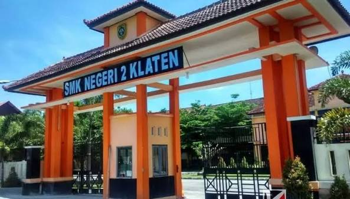

Mengenal lebih dekat SMK Negeri 2 Klaten

SMK Negeri 2 Klaten merupakan sekolah menengah kejuruan yang berkomitmen dalam mempersiapkan generasi muda agar memiliki kompetensi sesuai kebutuhan dunia kerja.
Pembelajaran dilaksanakan dengan mengutamakan kompetensi, karakter, kedisiplinan, kreativitas, dan kemampuan beradaptasi dengan perkembangan teknologi.
Menjadi sekolah vokasi unggulan yang menghasilkan lulusan berkarakter, kompeten, mandiri, berdaya saing, dan berwawasan lingkungan.
Menyelenggarakan pendidikan kejuruan yang berkualitas, mengembangkan kompetensi peserta didik, meningkatkan kerja sama dengan dunia industri, serta membangun budaya sekolah yang disiplin dan berintegritas.